KDOC 90: 『ゲームシナリオ入門』
この文書のステータス
- 作成
- 2024-02-12 貴島
- レビュー
- 2024-02-18 貴島
概要
『ゲームシナリオ入門』はゲームシナリオの書き方の入門書である。読んだメモを書く。
メモ
- 世界の条件
- 時代
- 過去
- 現在
- 未来
- 現実との距離
- ファンタジー
- 現実
- SF
- 組み合わせとして現実的なもの
- 中世 + ファンタジー
- 現代 + 現実
- 未来 + SF
- 時代
- プロットが完成しないとゲームを作り始められない
- プロデューサーはゲームの内容をあまりわかっていないのにインタビューではすべてをわかっている風に話す特技を持っている
- 優れたコンピュータゲーム
- 完成度の高いルール
- 直感的に理解できるUI
- バランスのいいレベルデザイン(進行による難度の上昇度合い)
- ゲームを遊ぶ意味
- 例. ピーチ姫を助けるために先へ進んでいる
- 目的の設定
- 動機の強化
- 記号的な報酬
- 得点や経験値
- 感情的な報酬
- 人々に感謝される
- 姫にキスしてもらう
- シナリオの機能は「やりたい」と「やってよかった」を演出する
- 設定とは、物語の舞台やキャラクターにリアリティを与える機能
- ゲームのためのシナリオとは、体験をより面白くするためのシナリオ
- ドラマを生み出す条件とは「葛藤があること」
- 対立と悩みの原因となる「目的」と、悩みの末に導き出される「決断」を加える
- 「目的」があるから「対立」が生まれ、対立があるから「悩み」が生じ、悩みの末の「決断」 によって物語が前進する
- リアリティとは受け手の中にある感情や価値観・常識とつながっている要素。受けてと地続きになっている要素
- 共感 x 反感(手続き) = 感情の動く量
- 制作前のチェックリスト
- 1. 目的 どんなゲームシナリオを作りたいかを具体的な言葉で書き出す
- 依頼内容
- テーマ
- 個人的な目標
- 2. 仕様 前提条件
- ゲームシステム
- ジャンル
- プレイ時間の想定
- 登場させられるキャラクターの数
- 使用できるグラフィックの数
- 1. 目的 どんなゲームシナリオを作りたいかを具体的な言葉で書き出す
- あいまいなイメージのままで制作が進むと、途中で「思ってたのと違う」という漠然とした修正指示が出てきてトラブルに発展する。トラブルを避けるために制作の初期には相手から言葉を引き出すのに注力する
- 漠然は悪
- 言い切ることと数字にすること
- アイデアづくりの3工程
- 置く
- 目的を置く
- 具体的な前提条件を書き出す
- 条件
- 目的の細分化、方向性
- 3つに絞ってキーワードを設定する
- 単語と一文の両方をキーワードにするとよい
- 一文のほうがよりアイデアっぽいが、単語にも重要なアイデアが含まれている
- 掘る
- キーワードを掘り下げる、関係する情報を増やす
- つなぐ
- アイデアの本質は組み合わせの発見である
- アイデアの作り方
- 有効な資料をできる限り集める
- 集めた資料を咀嚼する
- 問題を心の外に追い出す
- ふとアイデアが浮かんでくる
- アイデアが現実の世で使えるか試す
- 3つを頭の中で順番に全通り組み合わせていく
- キーワードを掘り下げた情報
- 掘り下げた情報同士
- 掘り下げた情報と前提情報
- 置く
- カラーバス効果はアイデアづくりに応用できる
- 「今日は大きいものの意識を向けよう」とお題を決めて外に出る。自然とさまざまな大きいものの情報が飛び込んでくる
- 大事なのは普段意識が向かないものを意識すること
- オズボーンのチェックリスト
- 転用
- 応用
- 変更
- 拡大
- 縮小
- 代用
- 置換
- 逆転
- 結合
- 物語作りの基本
- 独自性のある舞台の設定
- よく動くキャラクター
- 結末を知りたくなるプロット
- 自然で読みやすいテキスト
- 設定には3つある
- キャラクター
- 世界
- 作品全体の背景となる世界の設定
- 舞台
- シナリオが発生する場所の設定
- 魅力のある設定パターン
- 1. 舞台設定に「物語」がある
- 主人公が体験するドラマではなく、舞台そのものが持つ物語性
- 避けられない死に向かうという設定は強い物語性を持つ
- 例. 消えゆく舞台
- 隕石の衝突などによる世界の破滅
- 神や魔王、倒すことで終わりを避けられる対象が存在しない
- リンダキューブ - Wikipedia
- ネオ・ケニアという地球によく似た惑星が舞台のロールプレイングゲーム
- 8年後に回避不能の巨大隕石が衝突するという設定で、期限内にできるだけたくさんの動物のつがいを集めて「箱舟」という呼ばれる宇宙船に乗せ、星から脱出するのが目的
- 真・女神転生III-NOCTURNE - Wikipedia
- 東京受胎という呼ばれる現象によって世界が終わり、混沌から世界が始まるロールプレイングゲーム
- 主人公の最終目的は次に創生される世界の選択
- セプテントリオン - Wikipedia
- 豪華客船が舞台のアクションアドベンチャー
- 沖合で嵐に見舞われ60分後に沈没する船からできるだけ多くの乗客を救出するのが目的
- タイムリミットによって手に汗握る展開を楽しめる
- 主人公が体験するドラマではなく、舞台そのものが持つ物語性
- 2. 舞台設定に「特殊性」がある
- 特殊な構造や成り立ち、特別な力を持つ場所の設定が、舞台の魅力につながっている設定パターン。舞台が特殊な構造を持つ場合、往々にして構造の真相に興味深い謎が隠されている
- ドラゴンクエストVI 幻の大地 - Wikipedia
- 上と下、2つの世界を行き来し、世界の秘密と本当の自分を探す国民的ロールプレイングゲーム。王道を行く物語とトリッキーな舞台構造の組み合わせ
- 舞台の設定と主人公たちの設定が相互に干渉しあう構成。舞台の構造が物語に驚きと発見という魅力を与えている
- エンド オブ エタニティ - Wikipedia
- 「バーゼル」と呼ばれる機械の塔を中心にした超未来の地球が舞台のロールプレイングゲーム
- ワンダと巨像 - Wikipedia
- 16体の巨像が住まう「古の地」が舞台のアクションアドベンチャーゲーム。主人公は大切な人の魂を取り戻すために相棒の馬と巨像を倒す旅に出る
- 3. 舞台設定に「際立ったシチュエーション」が採用されている
- 廃病院、洋館、学校、宇宙船など比較的狭い空間を舞台にし、際立ったシチュエーションを生み出すパターン
- バイオハザードシリーズ - Wikipedia
- 洋館が舞台のサバイバルホラー
- バイオハザードによって誕生したゾンビが徘徊する古びた洋館という、西洋ホラー仕立てのシチュエーション
- 極限脱出 9時間9人9の扉 - Wikipedia
- 仕掛け付きの密室にされた豪華客船が舞台の脱出 × サスペンス
- 9という象徴的な数字を設定することで好奇心を刺激する
- ダンガンロンパシリーズ - Wikipedia
- エリート高校が舞台の、ハイスピード推理アクション
- 学園内でデスゲームを強いられる
- 学級裁判のルール、個性的なキャラクターたち、シナリオの秀逸さが魅力
- ネットハイ - Wikipedia
- SNSのフォロワー数で国民をランク付けする「ネオ・コミュニケーション法」が施行された日本が舞台の爆発炎上バトル
- 「ネオ・コミュニケーション法」によって一部のリア充が利益を独占しているという奇抜な設定が魅力
- 国家の根幹に関わる法律に個性を与えることで舞台に際立ったシチュエーションを生み出している
- ソウ (映画) - Wikipedia
- 男は老朽化したバスルームで目を覚ます。鎖でつながれているため脱出できないが、バスルームの扉は開いており密室ではない疑似密室
- タイトルにSAWにはいくつもの意味が込められている
- 1. 舞台設定に「物語」がある
- 特殊ルール
- 特殊ルール自体が明確な「目的」を生み出すため、そこに「対立」を設定するだけで自然と「悩み」と「決断」が続き、ドラマが成立する
- 劇場型の特殊ルールでは、ルールを守ったあるいは破った際に「いいこと」「わるいこと」が当事者の身に降りかかる
- 逃れようのない強制力があることで、強いドラマが生まれている
- ドラマが足りないと感じたら特殊ルールを導入してみる
- ドラマが弱いと感じたら賞罰を設定して「劇場型」にしてみる
- 劇場型の特殊ルールの基本事項
- 空間の限定
- 時間制限
- 行動の禁止・強制
- 強制力のある賞罰
- 舞台設定
- 舞台設定を考える際の起点は、4つに分かれる
- 舞台起点
- 舞台に独自性があり、うまく物語と結び付けられればそれだけに個性のある作品になる
- 物語起点
- 物語の必要に応じておのずと設定すべき舞台が決まっていく
- キャラクター起点
- そのキャラクターが一番輝ける舞台はどんなところか
- 企画起点
- 企画部分が先行して決まっていて、それに合わせた舞台設定をする
- 舞台起点
- 舞台設定を考える際の起点は、4つに分かれる
- チェックリスト
- 世界(モデル)
- ゲームジャンル
- ストーリージャンル
- 舞台
- 目的
- 特殊ルール
キャラの機能。機能とは、物語におけるキャラクターの働き方を決める項目。
- 主人公。プレイヤーの分身。力強い目的を持って物語を前進させる機能
- 感情移入が重要で、共感しやすい目的や欲求をもたせる
- 感情移入しづらい個性を主人公に設定する場合は、プレイヤーが気持ちよくなる要素を1つもたせる。主人公を完全無欠にしない。感情移入できなくなるので
- 敵対者。目的達成を阻む存在。恋愛ゲームだと攻略対象。敵対者の機能は主人公に葛藤を与えること。設定のポイントは手強さと対立軸。
- 強さには物理的、知能的、価値的(神とか悪魔とか幼馴染とか)な強さの3つがある。強さのない敵対者は主人公に葛藤を与えない。
- 敵対者の4パターン。
- 環境に害をなす。壊したい vs 守りたい
- 特定の人間にのみ害をなす。刑事 vs 犯人とか逃亡者 vs 刑事 など
- 主人公と利害が相反する。勝ちたい vs 勝ちたい
- 価値観の相違。分かって欲しい vs 理解できない
- 倒すべき相手は憎く、強く。強い反感につながる要素を入れる。下手に共感できる背景を設定してやる気をそぐより、徹底的に反感を覚えるようにする
- 主人公と違って完全無欠でよい
- 相棒。主人公と行動を共にする仲間キャラクター。相棒の機能は主人公の「行動」と「魅力」を引き出すこと
- 主人公が探偵だと、相棒は事件を持ってきて行動を引き出し、事件現場でおバカな発言をして主人公の推理力という「魅力」を引き立てる
- 主人公が拳法の達人だと、相棒は絡まれたりさらわれたりして、主人公が最大の魅力である拳法を使う機会を作りだす
- 強さ、善悪が主人公と反発しあう存在だとよい。主人公の行動を引き出す。強い/弱い。魔法使い/脳筋。バカ/賢い。気弱/強気。堅物/奔放。無口/おしゃべり。
- 種族の違いなども有効
- まず主人公を作る。長所や弱点、性格などの魅力を明らかにする。次にその魅力と対になる要素を核にして相棒を作る
- 互いに魅力を刺激し合う、相乗効果が期待できるキャラクターが誕生する
- 援助者。主人公を助けてくれる存在。挫折した主人公に手を差し伸べるのが役割
- アイテムを与える、修行をつける、貴重な情報を教える
- 旅立ちのきっかけを与えるのも援助者
- 主人公たちとの関わり方を決める。物語での使いどころを決める
- 過保護にならないように注意。ご都合主義になる
目的。キャラクターが物語の終わりにどこへたどり着いていたいかを決める。キャラクターの行動は終始一貫して目的に集約される。ポイントは設定を目的に集約させること、欲求の延長線上に目的を置くこと。一貫性のないキャラクターは、場当たり的な行動をする。その場の都合で動きが変わるため、行動に必然性や説得力がない。よく動くキャラクターとは次の行動が容易に想像できるキャラクターである。場当たり的に動くキャラクターは自由度がありすぎて動かしにくい。
- まず目的から設定するとよい
- 無理やり動かしても行動に説得力がないため、受け手はキャラクターに違和感を覚え、感情移入できなくなる
- 欲求は力強く、動機は具体的に、目的は欲求の延長線上におく
- 目的ができてから「なぜその目的を求めるのか」、という欲求を作る
性格。エニアグラムの9類型を使うのがおすすめ。
- モデルがあっても〜っぽい性格と書いてはいけない。モデルとなる人物やキャラクターの性格を分析し、自分なりの言葉で言語化する
- 自分なりの言葉で言語化しなくては、正しい理解に至らない。練習として自分の性格を分析し、言語化してみるとよい
- 例. 前の人がハンカチを落としたとき、どう行動するかでもいろいろ性格が出る
- 汚れを払って渡す
- たたみ直して渡す
- 気づかれないようにポケットに忍ばせる
- 渡す方法を考えるうちにサラリーマンが行ってしまう
- 声をかけることができず持って帰ってしまう
- 具体的な行動をあわせて想像することで、キャラクターに個性をつけられる
- 「怒りっぽい性格」でも怒りをどういう行動で表現するかでキャラクターの個性が浮かび上がってくる
弱点はキャラクターを魅力的にする。弱いものや不幸な者に対して、人は同情的になる。コンプレックスは共感・感情移入しやすくなる。
- 弱点がキャラクターを象徴する個性になることも多い
- ピンチとは強い葛藤である
背景はキャラクターの現在に影響を与えた過去を作る項目。なぜその目的や価値観を得るにいたったのか。目的が現在から未来に向かっていく理由だとすると、背景は過去から現在に至った理由を作るもの。過去、現在、未来をつなぐ一貫性が設定されると、キャラクターに説得力が生まれる。裏付けができるため受け手はキャラクターを理解しやすくなる。
- そのままではバラバラに見える設定が、背景という裏付けで一貫性をもつようになる
- 各設定項目に対して、「
なぜ?」 → 「〜だから」の形式で答えを見つける。そのとき重要なのは各項目の共通点からキーワードを見つけ、各項目をつなぐ。共通点がなければ、ばらばらの設定になってしまう
好き嫌い。多くを説明する必要のない、キャラクターの好みを設定する項目。好き嫌いはキャラクターやシナリオのアクセントとして使われる。好きなもの嫌いなものを登場させることでシーンに動きを与える。例えば恋愛ものであれば攻略対象の好みのタイプを設定する。苦手なものを設定しておくと苦手の克服を手伝ったり守ったりして距離を縮める使い方ができる。バトルものであれば属性、痛み、人間性など。集団で逃げている場合仲間に水嫌いがいれば、ほかの方法を考える、置いて逃げる、無理やり水に引きずり込むなど動きや感情に影響を与える使い方ができる。
- 使いどころがわからない設定に意味はない
- 漠然としたままでは、アクセントとして使いどころを考えるのに苦労する。漠然は悪
特徴。キャラクターの代名詞になるような際立った個性を設定する項目。キャラクターの一番の特徴がほかの項目で設定されている場合は、特徴は設定しなくてよい。設定のポイントは、キャラクター1人につき特徴を1つだけ設定すること。見せ場を作れない特徴は意味のある特徴ではない。
職業。キャラクターが日々行っている仕事や所属している組織を設定する。職業を設定することには利点がある。
- キャラクターの日常が想像できる。キャラクターがその世界の中で確かに生きているのだと感じられれば、キャラクターが受ける痛みや喜びにリアリティが生まれ、受け手の感情移入が強まる
- キャラクターが持っている知識や技術がわかる。キャラクターが持っている知識や技術の説明を省略できる。キャラクター作りのヒントをたくさん得られる。一般的な弁護士像を知ることは例外的な弁護士キャラを作るヒントになる。常識を作ることで非常識を作りやすくなる
- 社会的な関係性がドラマ作りに役立つ。職業の中には設定することでキャラクター同士の社会的な関係性が成立するものがある。王と兵士。高校教師と高校生。探偵と助手。ドラマは対立が困難なものであるほど劇的になる。弱者が強者に挑む、許されない関係を乗り越える、利害が相反する者同士の対立、といった構図ほど面白いドラマになる
セリフ。セリフには性格・年齢・性別・容姿・出身地・知識・教養などさまざまな情報が反映される。書き分ける必要がある。容姿や設定がどれだけ違っていても、セリフが似通っていると「似ているキャラクター」という印象を与える。キャラクターの印象を最終的に決定するのはセリフであるといえる。具体的なセリフは書いてみないと出てこない。4つの質問をする。
- 自己紹介して。一人称と語尾、他人に対する口調、平時のテンション
- あなたの嫌いなものとその理由を教えて。キャラクターの内面
- 口癖や決め台詞はあるか。キャラクター性を反映した口癖や決め台詞。シーンの締めやクライマックスを盛り上げるのに役立つ
- なんでもいいのでひと言。自由に思いついたセリフを書く
- セリフを作る際のポイントは年齢、職業、性格、背景から考えること
- 職業ごとの専門的な単語はセリフ作りに役立つ
- 職業倫理を知っておくこともセリフにリアリティを持たせるのに役立つ
- 育った環境を思い描き、そこから導き出される言葉遣いを考えるとキャラクターの口調を想像しやすくなる
個性の定義を明確にする。個性には、2つの意味が含まれる。個人に備わった特有の性質(個人性)と、際立った特徴。個人性がなければキャラクターは個人として存在できない。
キャラクターに個性を与える代表的な方法は、普通ではない部分を作ること。魅力ある個性を持つキャラクターが持っていること。
- 好奇心を刺激する要素。気になる、知りたいといった興味の入口になる
- 未来を期待させる要素。どうなるのだろう、見届けたいといったキャラクター自身の物語への関心を喚起する
- 好奇心を刺激して興味を引き付け、未来を期待させることで継続的な関心につなげ、感情を動かすドラマで満足感を与える
個性的なキャラクターを作るヒントは、極端・希少・未知・秘密・違和感の5つ。
個性を与える代表的な方法は普通でない部分を作ること。「接客技術が世界一のコンビニ店員」という極端さは好奇心を刺激する。長さ・重さ・大きさ・感覚を極端にすることでも個性を作れる。極端にして効果が大きいものは誰もが常識的に知っているもの。
希少とは、大勢の中に1人いる異質な存在。例えば「男子校の中に1人在籍している女子生徒」とか。どうしてそんなことになったのか、これからどうなるのか気になる。希少を設定するときには、希少さが際立つように舞台や周囲のキャラクターとの兼ね合いを大切にする。
未知とは、文字通り知らないもの。受けてが知らないもの、作品の登場人物が知らないもの、2つの意味を含む。知らないものを知りたいと考えるのは人間の性質である。中でも危険さに人は敏感に反応する。ホラー作品が根強い人気を保ち続けるのは人が得体の知れないものに強く引き付けられるから。異邦人も未知のキャラクター。自分たちのコミュニティの外から来た者に対して人は恐れを含んだ好奇心を抱く。異世界に迷い込む主人公、よその星からやってくる知的生命体。魅力のある個性を与えるポイントは、異邦人に未来への期待を持たせること。異邦人によって正負の変化が起こりそうな気配を感じさせられれば、未来への期待を持たせられる。
- このパターンではコミュニティの状況作りが重要。平和なところに危険な匂いのするキャラクターがやってくる、危うい状況に救いの手になりそうなキャラクターがやってくる、など
- 異邦人は状況とセットで作る
- 未知は登場シーンの引きが重要
秘密。他人にばれると困ったことになる秘密を抱えているキャラクターも魅力的な個性を備えた存在。変身ヒーローや魔法少女。
違和感。違和感は容姿に宿る個性で、好奇心を刺激する要素。身体的な特徴以外に、服装や所持しているもの、連れている人間でも違和感を作れる。見た目と内面に落差のある組み合わせも違和感のある個性につながる。身体的な違和感を作るときは背景や内面と親和性の高い、キャラクターを象徴する個性を与えるのがポイント。筋肉マンの「肉」、緋村剣心の頬の十字傷は背負う過去の象徴。
キャラクターの作成リスト。
- 名前
- 性別
- 年齢
- 身長
- 体重
- 体格
- 容姿
- 機能
- 職業
- 目的
- 欲求
- 動機
- 性格
- 弱点
- 背景
- 好き
- 嫌い
- 特徴
- セリフ
- 自由枠
目立つ個性のチェックリスト。他より抜きん出ている、キャラクターを象徴する設定が1つ以上あれば合格。
- 特技・能力
- 性格・欲求・思想
- 容姿・肉体・種族
- 謎・秘密
- 持ち物・装備(ペットや使い魔などの生物も含む)
動きのチェック。シチュエーションに放り込んで動きが想像できるかチェックする。5つのうち、相棒と援助者は2つ以上、敵対者は3つ以上、主人公は4つ以上で動きを想像できれば合格。
- 宝くじで1等5億円が当たった。どうするか
- 旅行先のホテルで夜な夜な不気味な声と壁をノックする音が聞こえてくる。どうするか
- お金を下ろしに行った銀行で銀行強盗に遭遇した。受付の行員が人質にとられている。どうするか
- 無人島に作ったキャラクター4人のキャラクターが流れ着いた。所持品は普段から身につけている衣服や道具のみ。それぞれのキャラクターはどのように動くか
- 自由枠。作った舞台を使って、シチュエーションを1つ考える
キャラクターの相関図をチェック。主人公、相棒、援助者、敵対者の関係性をチェックする。線が一方通行になっていないか。それぞれのキャラクターが互いに思いや狙いを持って関係してないとドラマは生まれない。線が双方向に伸びているかどうかをチェックする。双方向でない 場合は、キャラクターの関係性を見直す。
- 既存のキャラクターを分析して言語化することは自分の引き出しを増やすことにつながる。キャラクター設定に迷ったら既存キャラクターの設定表を作ってみる
- 背景 → 目的 → 欲求
プロットはゲームシナリオの工程でもっとも難しい。プロットとは、「誰がどこで何をしてどうなるか」を簡潔にまとめた物語の完成予定図。

Figure 1: 物語の構成要素
- 脚本のもっともよい始め方は、エンディングを知ること(シド・フィールド)
- 中継点を作る。中継点の役割は主人公に困難を与える「事件」を起こすこと
- つかみ → 中継点 → 結末
- 事件に求められる機能
- 物語を前進させる
- 主人公に葛藤を与える
- キャラクターの本性を明らかにする。行動の積み重ねでキャラクターの本性が明らかになり、受け手はキャラクターへの理解を深めていく
- 事件を経ることで、主人公たちの人物像が明らかになる
- 中継点は文脈で結ぶ。つかみと結末のあいだに置く事件を中継点と呼ぶが、文脈によって因果関係がなければならない
- つかみ → 中継点 → 中継点 → 中継点 → 結末
- 面白さはプロットの段階でおおよそ判断できる。思い切ってプロットを捨てる勇気も必要。プロットの段階で手応えのないものが、シナリオ化してみたら実は面白いことはまずない
ゲームならではのプロット。ゲームとそれ以外のメディアのプロットには決定的な違いがある。それは「マルチ」であること。マルチストーリーやマルチエンディングで、複数あるのを意味する。
- マルチの分岐はプレイヤーの選択によって決まる。ゲームにおける選択は2つ、ゲームプレイ部分での「行動の選択」と物語部分での「意思決定の選択」
- シナリオのタイプ。一本道、分岐合流、マルチストーリー、マルチエンディング
- 「面白い」とは感情を刺激するもの
- 観客が主人公に出会うシーン(冒頭のシーン)に、危機一髪のところでネコを救うエピソードを入れることで、観客は主人公の性格がわかり、共感し好きになる
- 主人公への感情移入は「つかみ」で作る。ヒロインやサブキャラクターに感情移入していると、彼らが事件に巻き込まれたときに「解決したい」という欲求が自然と湧き上がる
- 予想ができて、予想どおりになるのが「ベタ」
- 型ができていて、型のとおりに展開するのが「お約束」
- 予想に願望が加わり、期待に応えられるのが「王道」
期待を生むための条件。
- 受け手がキャラクターに感情移入している
- 受け手がキャラクターの目的に共感している
- 受け手が物語の展開を理解している
ゲームではシステムで遊んでいる時間が長くなるため、なるべく理解しやすいシンプルな展開が求められる。テーマで深く刻み込む。その物語が何について語るかを一文に凝縮させたもの。届けたい感情、問いたい価値観、伝えたい情報は物語の核になる。あらゆる場面で繰り返し顔を出すテーマによって、受け手は作り手の思いを受け取り、より深く物語を心に刻む。テーマを作るには、自問自答を繰り返す。「自分が書こうとしているのは、何についての物語か」。
- テーマが見つからないときは主人公を掘り下げる
- テーマを見つけるのは非常に難しい。わからないなら横に置いてほかを先に進めるとよい。完成を最優先させる
多くの展開は「つかみ」「発展」「危機」「結末」の4パートで構成されている。
つかみでの目的。
舞台を紹介する
時代、場所、環境、状況などを受け手に伝える。説明的にならないよう、舞台設定を生かした事件を作る。
主人公に感情移入させる
主人公が何者なのか、どんな目的を持っているかを紹介し、受け手に感情移入してもらう。
きっかけとなる事件を起こす
主人公が行動を起こすきっかけを作り、受け手に物語の先を知りたいと思わせるのが目的。
プロットポイント1を入れる
プロットポイントは物語の転換点を意味する。主人公に確かな目的を与え、背中を押す。目的を得た主人公は決意を持って行動を始める。どこへ向かうか手探りだった主人公が、自らの意思で歩き始める。目的に向かって歩きだすことで目的の達成を阻む障害が明らかになり、葛藤が生まれる。
一度にたくさんのものを置くと、受け手は何を見ていいかわからず心が離れる。よく吟味した情報に繰り返しスポットライトを当てて、強く印象づけられるようにする。
発展では「つかみ」を受け手話を広げていく。目的は3つ。
物語の輪郭をはっきりさせる
何を語る物語なのかを受け手にはっきりと理解してもらう。ポイントはプロットポイント1から発展した事件を置くこと。急に無関係な事件が始まると、受け手は物語を見失う。理解は「期待」につながる。後半の「危機」と「結末」を盛り上げるために、「発展」で物語の輪郭をはっきりさせる。これはどういう物語という疑問を払拭する。
目的を達成する意欲を高める
主人公への共感を強める。主人公の目的達成への意欲を高めることで受け手は主人公が行動する理由に説得力や納得感を得て共感を強める。
パートの最後にミッドポイントを入れる
前後半の継ぎ目に置く大きな転換点。それまでの流れを一変させ、物語に新しい意味と方向性を与える。どん底まで落ちた主人公が逆転へのきっかけを得る。気づきの転換点とも言える。つかみでの主人公は暗闇を歩いている状態。歩くうちに目が慣れてきて、どこに向かっているのかがわかってくる発展。わかってきたものに強い光を当てその本当の意味を知らせるのがミッドポイント。ミッドポイントによって主人公は自分の置かれた状況を正確に知る。ミッドポイントの目的は主人公を取り巻く状況を一変させ、真の目的を明らかにすること。ラスボスだと考えていた敵だが、敵を操っている真の黒幕がいることを知る。など。
危機。ミッドポイントで明らかになった真の目的に向かう主人公が、次々と困難に見舞われる。危機に求められる要素は2つ。
主人公の感情を大きく揺さぶる事件を起こす
主人公に次々と困難を与え、感情を大きく動かすことが目的。
プロットポイント2を入れる
結末で主人公の感情を頂点に押し上げるための準備。乗り越えるのは不可能だと感じるくらい強い葛藤を与える。プロットポイント2での追い込みは、絶望の度合いが強いほど結末での逆転や解決の効果が劇的なものになる。
結末。最後の戦いが行われ、主人公の目的が達成されるかの審判が下るパート。プロップポイント2で沈み込んだ主人公を立ち直らせ、最後の戦いに向かわせる。結末に求められる要素は3つ。
- 主人公を変化させる
- 最後の戦いに感情の頂点をもってくる
- 必然性のある結末を作る
結末での変化は精神的な成長として描かれる。葛藤を乗り越え精神的に成長し、最後の戦いに臨む決心をする。葛藤を乗り越えるきっかけは「つかみ」「発展」「危機」のなかにある。経験や記憶が葛藤を乗り越えるための力になる。唐突な新しい情報やキャラクターを出さないこと、偶然に頼った勝利などのご都合主義を避けること。最後の戦いは主人公が積み重ねてきたものだけで行う。
置き換えでアイデアの種を見つける。ベースのアイデアをごく簡単なあらすじにまとめる。各項目を抽象化する。竜宮城という固有性を消して「主人公が見知らぬすごい場所」にする。抽象化した部分に思いついたアイデアを入れていく。置き換えを意識的に行っていくと、多くの物語やエピソードがよく似た「型」に当てはまっていることに気づくだろう。
環境に違いを出す。天気や日付で意味が変わる。プロポーズをする男のエピソードであれば、クリスマス、恋人の誕生日、そのほかの日には大きな違いがある。台風であるか晴れであるかには違いがある。カフェで別れ話をするカップルがいるとして、カフェに客がたくさんいるのと、男女以外の客がいないのとでは演出効果に違いが出る。
切り口を作るポイント。
職業
江戸時代にタイムスリップした医者。戦国時代にタイムスリップした自衛隊。職業を切り口にした独自性。職業の専門性が際立つ舞台を設定するのがポイント。魔王が教師になる、忍者が宅配業者になる。職業とキャラクターの間にギャップを作るのがポイント。
各パートを具体化していく。
- パート。つかみ、発展、危機、結末
- 原因と結末。パートごとの原因と結果を書き込む
- 登場キャラクター
- 主な舞台。事件が発生する具体的なもの。教室とか公園などのレベル
- 目的
- 事件の内容
- 主人公の葛藤。もっとも大きな葛藤を書く
- エピソード
- つかみ: プロットポイント1
- 発展: ミッドポイント
- 危機: プロットポイント2
- 結末: 主人公の感情が頂点に達するエピソード
- その他。情報の補足や伏線、選択肢の有無。使うか悩んだアイデア。手に入れた重要アイテム。情報の積み重ねをわかりやすくチェックできるようにする
アイデアが出揃ったら、つなぐ作業。
- 文脈は途切れていないか
- 主人公は能動的に行動しているか
- 主人公の葛藤は劇的か
- キャラクターの感情は描かれているか
事件を具体化する手順。とにかくアイデアを出してはつなぎ、出してはつなぎの繰り返し。最後まで完成させることに勝る優先事項はない。職人のように作り込むのはプロになってからで十分。
- 前提情報の整理
- 前提情報をもとにアイデアを広げる
- チェック項目や各パートの要件を参考にアイデアをつなぐ
トレーニング方法。自分が選んだのと同じストーリージャンルの作品を持ってきて、プロットの大枠を抜き出す。物語を4つの事件に要約し、プロットの大枠を抜き出す。
ゲームシナリオにおける情報伝達の基本はセリフ、つまり文字。声の演技や表情に頼らずとも、文字からキャラクター性を垣間見せることが重要。多少誇張されていたり、芝居がかったセリフになったとしても、文字でキャラクター性を伝えることを優先する。キャラクター性を文字で表すことで、プレイヤーは誰が話しているかに気を取られることなく、シナリオを読み進められる。
- セリフに反映される個性が見つけづらいときは職業に注目する
- 職業設定はキャラクター性が如実に現れる
- 情報量の対照があると自然な掛け合いになり、勢いがあり力強いドラマが生まれる。勇者が賢者から重要な情報を教えてもらう、鋭い探偵と助手、とか
- キャラクター間の力関係もわかりやすい対照を生み出す
上手な情報の出し方。
質疑応答で情報を出す
問わず語りをさせない。きちんと対話させる。質問者が確かな目的を持っており、情報量の対照を作れていれば難しくない。例外はキャラクターが1人しかいない場合で、そのときは自問自答させるか、ごく短いひとり言で情報を出す。
受け手に知りたいと思わせる
興味深い状況を作って、受け手が自ら情報を得たいと思わせる手法。情報を受け取るキャラクターの興味とシナリオを読んでいる受け手の興味を合致させられれば、多少説明的なセリフでも違和感がない。きっかけ作りには、落語や漫才といった短時間で設定を伝えて客を引き込むお笑いの切り口が参考になる。
情報を分散させる
情報出しが一本調子になるのを避ける。校長先生の話を避ける。誰か1人に話をさせるのではなく、なるべく複数人のキャラクターに情報を分散させて、対話の形を取る。
選択肢。選択肢の役割は物語に変化を与えること。どの選択肢を選んでも返答が同じだったり物語の展開が変わらないのでは選択肢を出す意味がない。必要なこと。
変化が想像できる
変化が想像できない選択肢は、選択肢の根拠がない。プレイヤーが自分の意思で未来を選んだという実感を持てない。勝手に物語が進んだと感じ、主人公との一体感を失う。
プレイヤーの意思が反映される
プレイヤーが不本意な選択をしないようにする。選択肢を用意する。
よいセリフをものにするには、「目で見て、耳で聞き、手を動かす」を何度となく繰り返さなければならない。読むだけでも、聞くだけでも、書くだけでも身につかない。セリフの三原則。最優先は物語を前進させることで、なるべく物語に関係のない無駄なセリフは省く。
- 物語を前進させる
- キャラクター性を出す
- 情報を出す
公共交通機関で他人の電話が気に障るのは、マナーが守られないことに対する感情的な要因と、会話の文脈を読み取れないことへのストレスという要因がある。人は文脈のない会話に少なからずストレスを感じる。
メッセージウィンドウの幅は限られている。短い文節で区切るように工夫する。
- 1つのウィンドウに1つの句点
- 1つの句点に1つの情報
キャラクター性と感情を引き出せるシチュエーションを作る。例えば小心者のキャラクターであれば恐怖を感じるシチュエーションに置く。
余計なつなぎを多用しない。「ああ」「えっと」「うーん」「いや」「でもさ」。余計なつなぎのないセリフは端的でキレがよく、読み味もすっきりする。「…」や「―――」を多用せず、言葉で間を表現する。
オリジナルの舞台設定で描かれるファンタジー作品は、登場するちょっとしたアイテムや生活習慣などにこだわると、世界の実在感や雰囲気がぐっと増す。「財布を拾った」より「ルイ・ヴィトンの長財布を拾った」、「古いアパート」より「築80年の木造アパート」。情報量を細かくするために文章量を増やしすぎないこと。情報の具体化は手段であって目的でない。
シーンの目的を言語化する。特に意識すべき要素が4つあり、言語化する。
- メインで描くべきもの(物語を前進させるための出来事)は何か
- キャラクター(特に主人公)の目的は何か
- キャラクター(特に主人公)はどのように感情を動かすのか
- 受け手の感情をどう動かしたいのか
映画の字幕の原則。知らなかった。
- 1秒4文字
- 2行以内
- 縦書きは1行10〜11文字まで
- 横書きは1行10〜13文字まで
- 1度に表示できる文字数は20文字まで
関連
- KDOC 59: ECSを使ってRPGを作る。ゲームを作るために読んだ